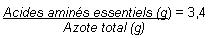
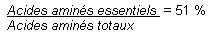
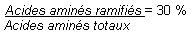

RÉSUMÉ DES CARACTÉRISTIQUES DU PRODUIT
ANSM - Mis à jour le : 20/09/1999
AMINOSTERIL 6 % ENFANTS, solution pour perfusion
2. COMPOSITION QUALITATIVE ET QUANTITATIVE
Arginine ......................................................................................................................................... 0,4500 g
Isoleucine ...................................................................................................................................... 0,4800 g
Leucine ......................................................................................................................................... 0,7800 g
Acétate de Lysine .......................................................................................................................... 0,7200 g
Méthionine ..................................................................................................................................... 0,1872 g
Phénylalanine ................................................................................................................................ 0,2250 g
Thréonine ....................................................................................................................................... 0,2640 g
Tryptophane ................................................................................................................................... 0,1206 g
Valine ............................................................................................................................................ 0,5400 g
Glycine .......................................................................................................................................... 0,2490 g
Alanine .......................................................................................................................................... 0,5580 g
Proline ........................................................................................................................................... 0,5826 g
Histidine ........................................................................................................................................ 0,2856 g
Sérine ........................................................................................................................................... 0,4602 g
Acétyl-Tyrosine .............................................................................................................................. 0,3106 g
Taurine .......................................................................................................................................... 0,0240 g
Acétyl-Cystéine .............................................................................................................................. 0,0420 g
Pour 100 ml.
Pour la liste complète des excipients, voir rubrique 6.1.
Total acides aminés: 60,0 g/l
Total azote: 9 g/l
Apport calorique: 240 kcal/l
pH = 5,5 à 6,5
Titrage de l'acidité: 12 mmol NaOH/l
Osmolarité théorique: 531 mOsm/l
Solution pour perfusion.
4.1. Indications thérapeutiques
Apport azoté (acides aminés de la série L) au cours d'une nutrition parentérale chez le nouveau-né à terme, le prématuré, le nourrisson et l'enfant, lorsque l'alimentation orale ou entérale est insuffisante, impossible ou contre-indiquée.
4.2. Posologie et mode d'administration
Posologie
La posologie est fonction du poids, de l'âge et du catabolisme azoté de l'enfant.
Dose quotidienne maximale:
· de 0 à 1 an: 25 à 42 ml/kg soit 1,5 à 2,5 g d'acides aminés/kg
· de 2 à 5 ans: 25 ml/kg soit 1,5 g d'acides aminés/kg
· de 6 à 15 ans: 17 ml/kg soit 1,0 g d'acides aminés/kg.
Posologie chez le nouveau-né prématuré:
· administration progressive sur une semaine de 8 à 50 ml/kg/jour, soit de 0,5 à 3 g d'acides aminés/kg/jour.
Mode d'administration
Perfusion par voie veineuse périphérique ou centrale (contrôler l'osmolarité).
Cette solution est à administrer à une vitesse maximale de perfusion de 0,1 g d'acides aminés/kg/heure soit 1,67 ml/kg/heure ou 0,6 gouttes/kg/minute.
Cette solution peut être administrée aussi longtemps que la nutrition parentérale est nécessaire.
Supplémentation
Cette solution doit être supplémentée dans le cadre d'une nutrition parentérale totale avec des apports énergétiques adéquats: solutions glucidiques, émulsions lipidiques, électrolytes, vitamines et oligo-éléments. Dans ce cas, vérifier la compatibilité et la stabilité du mélange réalisé, ne pas conserver le mélange et procéder à l'administration dans les 24 heures.
Comme toutes les solutions d'acides aminés, cette solution ne doit pas être administrée dans les cas suivants:
· hypersensiblité connue à certains acides aminés,
· anomalie congénitale du métabolisme des acides aminés,
· acidose métabolique,
· inflation hydro-sodée,
· insuffisance rénale en l'absence d'hémodialyse ou d'hémofiltration.
4.4. Mises en garde spéciales et précautions d'emploi
SE CONFORMER A UNE VITESSE DE PERFUSION LENTE du fait du risque d'apparition d'une diurèse osmotique et d'une perte rénale d'acides aminés.
La vitesse de perfusion ne doit pas dépasser 0,6 gouttes/kg/minute soit 3 gouttes/minute pour un enfant de 5 kg.
L'apparition de tout signe anormal doit obligatoirement entraîner l'arrêt de la perfusion.
Cette solution d'acides aminés ne contient pas d'ornithine.
Avant l'emploi, vérifier la limpidité de la solution et l'intégrité du flacon.
Ne pas ajouter de médicament dans le récipient sans avoir, au préalable, vérifié la compatibilité et la stabilité du mélange.
Se référer également à la notice du médicament à ajouter.
Précautions particulières d'emploi
Le choix d'un abord veineux central ou périphérique dépend de l'osmolarité finale de la solution en cas d'utilisation en mélange nutritif. La limite généralement fixée pour une perfusion par voie périphérique est d'environ 800 mOsm/l.
En règle générale, la perfusion par voie périphérique peut entraîner une irritation de la veine et une thrombophlébite. Pour minimiser le risque d'irritation veineuse, il est recommandé d'exercer une surveillance quotidienne du site de perfusion.
Surveillance de la balance hydroélectrolytique et de l'osmolarité sérique.
Un contrôle régulier clinique et biologique est nécessaire en cas de:
· insuffisance hépatocellulaire (risque d'apparition ou d'aggravation de troubles neurologiques en relation avec une hyperammoniémie); il est alors nécessaire d'effectuer un amino-acidogramme.
· insuffisance rénale (en raison d'apparition ou d'aggravation d'une acidose métabolique et d'une hyperazotémie en l'absence d'épuration extra-rénale).
· hypokaliémie et/ou d'hyponatrémie qui sont à traiter impérativement avant l'administration de cette solution.
4.5. Interactions avec d'autres médicaments et autres formes d'interactions
Sans objet.
Cette solution n'est pas destinée à l'adulte.
En règle générale, le prescripteur doit évaluer le rapport bénéfice/risque avant de décider l'administration d'une solution d'acides aminés, que ce soit au cours de la grossesse ou de l'allaitement.
4.7. Effets sur l'aptitude à conduire des véhicules et à utiliser des machines
Sans objet.
Des effets indésirables potentiels peuvent résulter d'une utilisation inappropriée: par exemple, surdosage, vitesse de perfusion trop rapide (voir rubrique 4.4).
Les effets qui peuvent s'observer et qui nécessitent l'arrêt du traitement sont: frissons, nausées, sueurs, hyperthermie, ainsi que perte rénale d'acides aminés.
La perfusion par voie périphérique peut entraîner une irritation de la veine et une thrombophlébite. Pour minimiser le risque d'irritation veineuse, il est recommandé d'exercer une surveillance quotidienne du site de perfusion.
Un surdosage ou une administration trop rapide peut entraîner des signes d'hypervolémie et des troubles hydroélectrolytiques.
Dans l'un de ces cas, il convient d'arrêter immédiatement la perfusion.
Dans certains cas graves, une épuration extra-rénale peut être nécessaire.
5. PROPRIETES PHARMACOLOGIQUES
5.1. Propriétés pharmacodynamiques
SUBSTITUTS DU PLASMA ET SOLUTIONS POUR PERFUSION/SOLUTIONS POUR NUTRITION PARENTERALE/ ACIDES AMINES (Code ATC: B05BA01)
(B: sang et organes hématopoïétiques).
Cette solution d'acides aminés est particulièrement adaptée aux besoins des nouveau -nés prématurés, aux nourrissons et enfants.
Elle contient 17 acides aminés dont 8 acides aminés essentiels, 2 semi-essentiels (arginine et histidine), mais aussi 3 acides aminés importants chez l'enfant (taurine, tyrosine, cystéine) et 4 acides aminés que l'on trouve dans l'alimentation et qui constituent les protéines corporelles.
Après perfusion de cette solution, les acides aminés rejoignent le pool plasmatique des acides aminés libres à partir duquel ils sont métabolisés et utilisés pour la synthèse protéique.
Des études analysant des acides aminés marqués ont montré l'incorporation des acides aminés perfusés dans les protéines endogènes.
Cette solution apporte 60 g d'acides aminés par litre et 9 g d'azote total par litre, avec les rapports suivants:



Dans le cadre d'une nutrition parentérale totale, cette solution doit être administrée en association à une solution de glucose, une émulsion lipidique, des électrolytes, des oligo-élements et des vitamines en fonction des besoins.
5.2. Propriétés pharmacocinétiques
La biodisponibilité de cette solution est complète.
Après perfusion, les acides aminés rejoignent leur pools endogènes respectifs et sont métabolisés selon les besoins de l'organisme.
La demi-vie plasmatique des acides aminés dépend de l'âge et du statut métabolique de l'enfant. Elle varie de 20 à 80 minutes chez un enfant âgé d'une semaine.
Le rein n'élimine qu'une faible proportion des acides aminés administrés par perfusion.
5.3. Données de sécurité préclinique
Les données relatives à la toxicité aigüe ( DL50) ne concernent que les acides aminés isolés et ne sont pas extrapolables aux mélanges d'acides aminés en solution.
Acide malique, azote, eau pour préparations injectables.
En raison de l'accroissement des risques de contamination microbienne et d'incompatibilités, il ne faut pas ajouter d'autres médicaments directement dans le flacon.
3 ans.
A utiliser immédiatement après ouverture du flacon.
6.4. Précautions particulières de conservation
A conserver à une température ne dépassant pas + 25°C.
Conserver le conditionnement primaire dans l'emballage extérieur afin de protéger ce médicament contre la lumière.
Ne pas congeler.
6.5. Nature et contenu de l'emballage extérieur
· 100 ml en flacon (verre incolore, type II) avec bouchon (bromobutyl), boîte de 1 ou 10
· 250 ml en flacon (verre incolore, type II) avec bouchon (bromobutyl), boîte de 1 ou 10
6.6. Précautions particulières d’élimination et de manipulation
· A utiliser immédiatement après l'ouverture du flacon.
· Usage unique seulement.
· Vérifier avant l'emploi que le flacon est indemne de fêlure ou d'éclat et que la solution est limpide.
AMINOSTERIL 6 % ENFANTS, solution pour perfusion, peut être mélangé avec des solutions de glucose, des émulsions lipidiques, des électrolytes et d'autres nutriments.
Lors du mélange, il est impératif de garantir l'asepsie et de s'assurer de la compatibilité.
7. TITULAIRE DE L’AUTORISATION DE MISE SUR LE MARCHE
FRESENIUS KABI FRANCE SA
5, place du Marivel
92316 Sèvres Cedex
8. NUMERO(S) D’AUTORISATION DE MISE SUR LE MARCHE
· 352 318-7: 100 ml en flacon (verre); boîte de 1.
· 352 319-3: 100 ml en flacon (verre); boîte de 10.
· 352 320-1: 250 ml en flacon (verre); boîte de 1.
· 352 321-8: 250 ml en flacon (verre); boîte de 10.
9. DATE DE PREMIERE AUTORISATION/DE RENOUVELLEMENT DE L’AUTORISATION
[à compléter par le titulaire]
10. DATE DE MISE A JOUR DU TEXTE
[à compléter par le titulaire]
Sans objet.
12. INSTRUCTIONS POUR LA PREPARATION DES RADIOPHARMACEUTIQUES
Sans objet.
Médicament non soumis à prescription médicale.